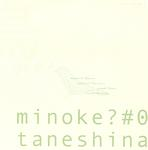

| Artist: | Minoke |
| Title: | Taneshina |
| Label: | Poseidon/Vital Records VR-011 |
| Length(s): | 28 minutes |
| Year(s) of release: | 2003 |
| Month of review: | [12/2003] |
| 1) | Til_na_n0g | 4.54 |
| 2) | Turkish David | 7.12 |
| 3) | Atarimae | 5.43 |
| 4) | Tri-band-boom | 5.32 |
| 5) | Nagoya No Itoko | 4.44 |